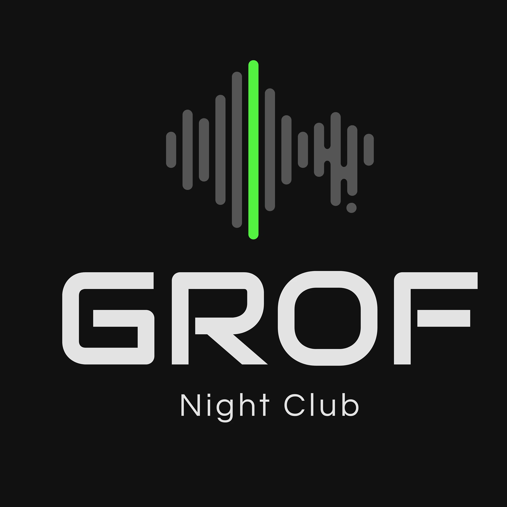
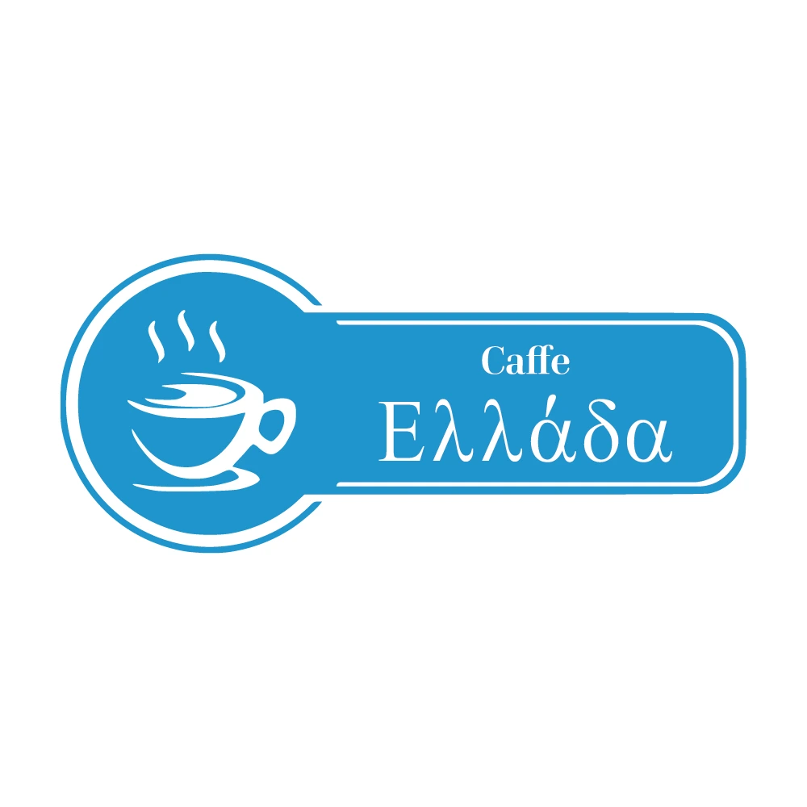
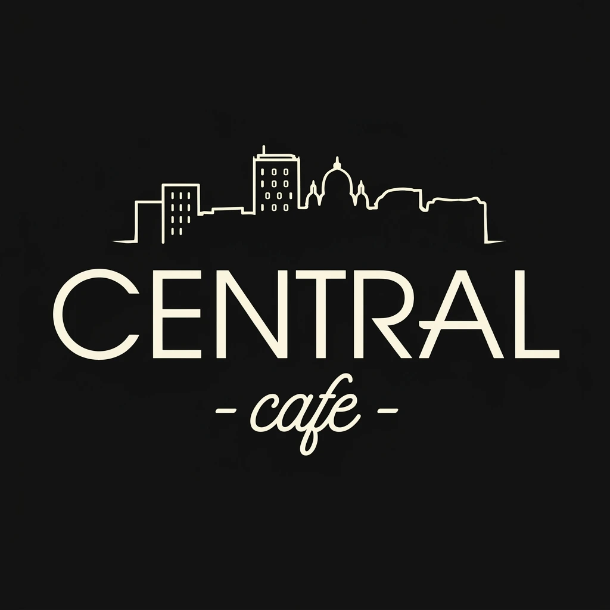
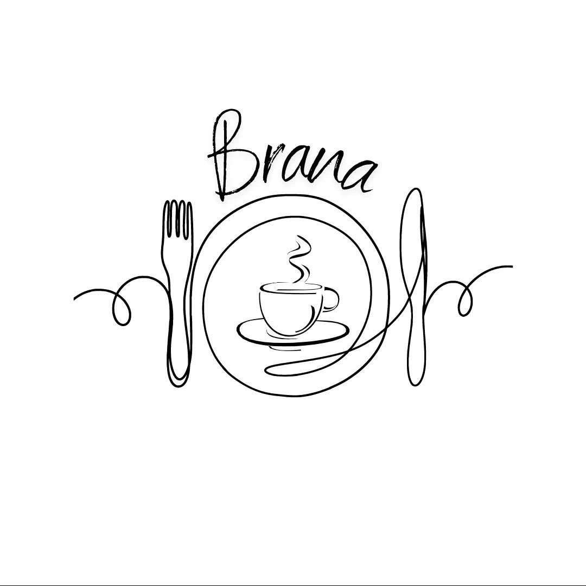
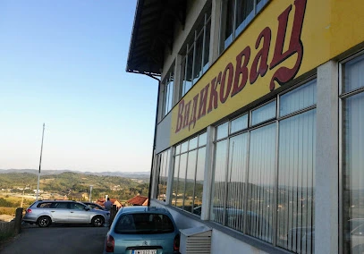
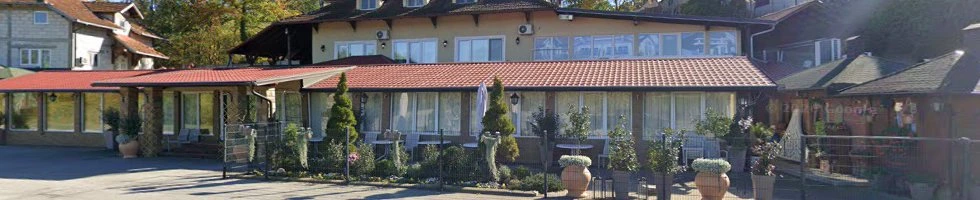
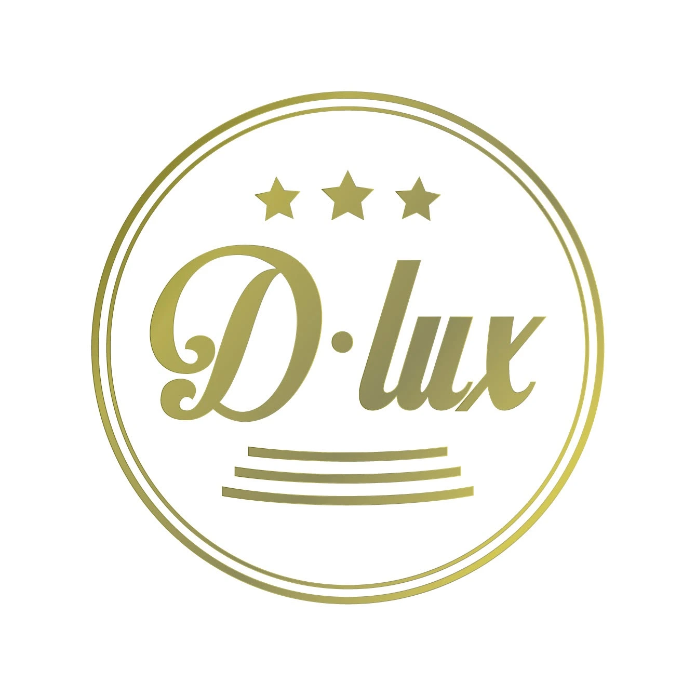
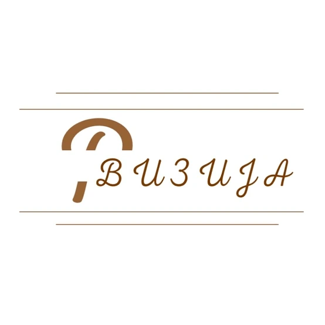

DJ Ognjen9+ godina energije za podijum.
Klubovi, privatne i korporativne proslave. Repertoar prilagođen publici, tako da se igra od prve do poslednje pesme.
Za svaku priliku, pravi zvuk
Set slažem prema mestu, publici i trenutku u večeri.
Klubovi
Energija koja drži podijum pun uz hitove koje publika traži.
Detaljnije
Nastup traje najčešće 4 do 5 sati, zavisno od radnog vremena kluba i dogovora sa vlasnikom. Pre nastupa se usaglašavamo oko žanra, tempa večeri i eventualnih ograničenja - da li ima gostujućih izvođača, u koje vreme se diže energija, i da li klub ima svoj ustaljeni zvuk kog se držim.
Na samom nastupu pratim publiku i prilagođavam repertoar u hodu, prema tome kako reaguje podijum, u skladu sa sistemom koji klub već ima.
Privatne proslave
Rođendani, svadbe i žurke po meri slavljenika i gostiju.
Detaljnije
Rođendani, godišnjice i domaće proslave - u restoranu ili sali. Trajanje se dogovara unapred i prilagođava planu večeri, od kraćeg intimnog druženja do proslave sa punim podijumom.
Pošaljite listu pesama koje obavezno želite da čujete, kao i one koje treba izbeći - repertoar gradim oko gostiju, ne oko gotove plejliste sa interneta. Ozvučenje prilagođavam veličini prostora, tako da zvuk bude prisutan, a ne nametljiv.
Kako izgleda saradnja
Od prvog javljanja do nastupa, u četiri koraka.
Pošalješ datum
Proveravam da li sam slobodan.
Dogovaramo detalje
Lokacija, tip događaja, trajanje, muzika i oprema.
Potvrđujemo termin
Dogovaramo sve što je potrebno pre događaja.
Nastup
DJ Ognjen preuzima podijum
Nastupi uživo
Pogledaj kako to izgleda kad se podijum napuni.
Gde sam sve nastupao
Klubovi, kafići i svečane sale u kojima smo pravili nezaboravne žurke i vrhunsku atmosferu.

Grof Night Club
Caffe Elada
Central Caffe
Restoran Brana
Restoran Vidikovac
Svečana Sala Bušić
D LUX Event Centar
Restoran VizijaDJ setovi
Kompletni miksevi na Mixcloudu, za slušanje kad god ti odgovara.
Često postavljana pitanja
Ono što me najčešće pitate pre rezervacije.
Da li nosiš svoju opremu i rasvetu?
Ozvučenje i rasvetu obezbeđuje klub ili organizator, u zavisnosti od mesta. To unapred proveravam i usaglašavam sa njima, tako da na dan događaja sve bude spremno i ne moraš dodatno da se brineš oko toga.
Koliko unapred treba rezervisati termin?
Za vikende, praznike i sezonu proslava preporučujem da se javiš čim odrediš datum - popularni termini se brzo popune. Za ostale dane obično ima više fleksibilnosti, ali svakako prijavi datum na vreme radi sigurnosti.
Kako se dogovara muzički repertoar?
Pre nastupa razgovaramo o tome šta želiš (i šta ne želiš) da se čuje, kao i o tipu publike i atmosferi koju priželjkuješ. Na samom nastupu se onda oslanjam na taj dogovor i čitanje publike uživo, tako da se repertoar prirodno gradi tokom večeri.
Koliko traje nastup?
Zavisi od tipa događaja - nastupi u klubu traju obično 4 do 5 sati, dok se za privatne i korporativne proslave trajanje dogovara unapred, prema planu večeri.
Gde sve nastupaš?
U Ljigu i celoj okolini (Lajkovac, Lazarevac, Ub, Mionica, Valjevo, Aranđelovac, Gornji Milanovac, Čačak). Za mesta van toga javi datum i lokaciju, pa se dogovaramo.
Treba vam DJ?
Pošaljite datum, mesto i vrstu događaja, a ja vam javljam da li sam slobodan i šaljem ponudu.